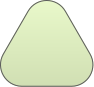

BMI Kalkulator
Berat badan ideal adalah impian semua orang. Tidak hanya memiliki bentuk tubuh yang menunjang penampilan, berat badan ideal juga menandakan kondisi tubuh yang sehat. Bagaimana denganmu? Yuk, hitung sekarang di BMI Kalkulator.
Isi data disamping untuk mengetahui status gizimu, kebutuhan kalori harian dan saran personal!
Menghitung berat badan
Menentukan kategori berat badan ideal atau tidak

Mempersiapkan program penurunan berat badan
Body Mass Index

Vitamin C
Jeruk, jambu biji, pepaya, tomat
Kalsium
Susu, ikan teri, tahu, sayuran hijau
Vitamin A
Wortel, bayam, hati ayam, labu kuning
Vitamin D
Ikan berlemak, telur, paparan sinar matahari pagi
Seng (Zinc)
Daging merah, kacang-kacangan, biji labu
Zat Besi
Hati, daging merah, bayam, kacang merah
Sumber: Studi prevalensi defisiensi zat gizi mikro penduduk dewasa Indonesia (metode probabilitas), IPB; studi asupan vitamin D populasi Indonesia. Angka bersifat gambaran nasional, bukan hasil ukur individual.